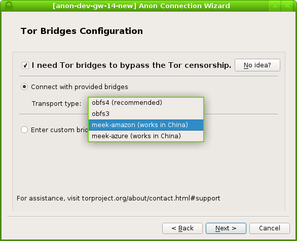

meek related information has been documented in Whonix Wiki. I will start writing the blog post. I will post the draft here before posting it on Whonix blog in a hope to get some review and feedback.
2 Likes
Epic
1 Like
New Pluggable Transport meek_lite Coming to the Whonix 14
Hello Whonix people!
We are thrilled to announce that a new pluggable transport called meek_lite is coming to the Whonix 14. In this blog post, we are going to introduce what meek_lite is and how you can use it in the upcoming Whonix 14.
What is Pluggable Transports?
In many areas around the world, the direct connection to the Tor network is censored. This is possible and easy to implement, in terms of technology, because all the Tor relays and directory authorities information is publicly available for everyone. A censor can simply maintain a real-time blacklist of all the IP addresses of the Tor guard relays and the directory authorities to block all the direct connections to the Tor network.
To solve this problem, the Tor project came up with the idea to provide users with unlisted Tor guard relays, called vanilla bridges, via many relatively private channels, Email and HTTPS web page, for example. Unfortunately, this is not a very effective way to bypass the censorship because, although the actual content in the traffic is strong-encrypted by the Tor clients, it can be fairly easy for a censor to identify whether the traffic is Tor traffic and then block it.
To overcome the weakness, Pluggable Transports (PT) is used to make the Tor traffic between Tor client and the Tor guard relay innocent-looking in a censor’s eye.
Why meek_lite is important?
Before Whonix 14, only there are only two types of Pluggable Transport supported by Whonix: obfs3 and obfs4. Integrating meek_lite into Whonix will be a great improvement on the usability and user experience for Whonix users who live in heavily censored areas. This is because:
- In some heavily censored area, China for example,
meek_liteis the only Tor Pluggable Transport that is effective. - A coming feature that allows users to get Tor Bridges from Tor launcher/anon-connection-wizard relies on it.
What is unique about meek_lite ?
The idea bedind traditional bridges, like vanilla and obfs4 bridges is security by obscurity. That is to say, an adversary can still get the bridges information via BridgeDB, just like what a normal user in censored area does. Although BridgeDB has been adopting many different kinds of way to reject those attempt, for example, by requiring getting the bridges using an email service under certain email providers, by developing algorithms that prevents people from getting a large number of different unlisted bridges in a short amount of time, still most of those bridges are blocked in some countries.
What is more, David Fifield said on the @tor-dev:
We know that at least China and Kazakhstan pay attention to the default Tor Browser bridges (and China blocks them as soon as they enter the source code, even before a release).
Unlike traditional bridges, meek_lite is on the concept of Collateral Freedom. According to the Tor Wiki, “[t]raffic is relayed through a third-party server that is hard to block, for example a CDN. It uses a trick called domain fronting to talk to a Tor relay while appearing to talk to another domain”.
This approach make meek_lite have better performance on censorship circumvention in heavily censored area. For example, during the 19th National Congress of the Communist Party of China in this October, meek is one of a limited number of censorship circumvention tools that were still effective in China after the upgrade of Internet censorship.
What are the differences between meek_lite and meek?
Tor Browser Bundle users may be familiar with the Pluggable Transport meek. meek_lite is a different implementation of meek. The differences are described by its author Yawning from the Tor project as follows:
This is a meek client only implementation, with the following
differences with dcf’smeek-client:
- It is named
meek_liteto differentiate it from the real thing.- It does not support using an external helper to normalize TLS
signatures, so adversaries can look for someone using the Go
TLS library to do HTTP.- It does the right thing with TOR_PT_PROXY, even when a helper is
not present.Most of the credit goes to dcf, who’s code I librerally cribbed and
stole. It is intended primarily as a “better than nothina” option
for enviornments that do not or can not presently use an external
Firefox helper.
To clarify, although meek_lite does not normalize TLS signatures, it is still effective enough to help users bypass the censorship in most of the cases. The best proof is that Orbot has been using meek_lite for a while.
How to use meek_lite in Whonix?
There will be two ways to let Tor use meek_lite once Whonix 14 is released. Both of the ways have been documented in the Whonix Wiki.
Option 1: edit the /etc/tor/torrc file manually
Add the following lines to /etc/tor/torrc file:
DisableNetwork 0
UseBridges 1
ClientTransportPlugin meek_lite exec /usr/bin/obfs4proxy
Bridge meek_lite 0.0.2.0:2 B9E7141C594AF25699E0079C1F0146F409495296 url=https://d2cly7j4zqgua7.cloudfront.net/ front=a0.awsstatic.com
Then reload the Tor.
Option 2: Use Anon-Connection-Wizard
Open Anon-Connection-Wizard, and select meek-amazon or meek-azure as bridge type in the Tor Bridges Configuration Page:

Should I use meek_lite as Pluggable Transport?
When choosing Pkuggable Transport, here is a practical rule you are recommended following:
- If you are not living in a censored area, it is neither necessary nor recommended to use any Pluggable Transport.
- If you are living in a censored area where obfs4 works, go for obfs4.
- If you are living in a censored area where obfs4 does not work, try meek/meek_lite.
Development Story
It is impossible to get meek_lite into Whonix 14 without the cooperation between developers from many different communities, including the Tor project, Debian, Tails and Whonix. I intentionally tried to keep a relatively complete record of how the work was done in this Whonix forum post.
If you are interested in contributing in such an efficient, supportive and encouraging environment, please consider to join us!
3 Likes
Could anyone offer me some feedback please?
Thank you very much!
2 Likes
meek_lite: A New Pluggable Transport in Whonix 14
Greetings Whonix users!
The Whonix development team is thrilled to announce that a new pluggable transport called meek_lite will be available in Whonix 14. This blog post will briefly describe meek_lite and how it can be easily configured in the forthcoming Whonix release.
What are Pluggable Transports?
In many parts of the globe, direct connections to the Tor network are censored. It is simple for censors to use technology to block connections, because it only requires maintenance of a real-time blacklist of all [https://atlas.torproject.org/ publicly known] Tor (guard) relays and directory authorities.
In order to try and solve this problem, the Tor Project developed and implemented the bridge protocol. Tor bridges (“Tor bridge relays”) are alternative entry points to the Tor network, not all of which are listed publicly. Readers might already be familiar with the “vanilla” obfuscated bridges - obfs2, obfs3, obfs4 - which are available from the Tor Project via private channels, email and the Tor Project bridge database.
Unfortunately, these bridges have several limitations: [ref]https://whonix.org/wiki/Bridges [/ref]
- Bridges are less reliable and tend to have lower performance than other entry points.
- There is no guarantee bridges will hide Tor and Whonix from ISP level observers - deep packet inspection may quickly reveal Tor traffic, and then block it.
- Aggressive censors can gradually block known public bridges by requesting the same information from the [https://bridges.torproject.org/ Tor Project BridgeDB], as any normal user would do. [ref]Thus the documented Whonix recommendation to use private obfuscated bridges whenever possible.[/ref] [ref]BridgeDB has adopted various methods to stymie adversaries. For instance, email requests must come from certain providers, and algorithms were developed that reject requests for a large number of different bridges within a short period.[/ref]
As David Fifield has [https://lists.torproject.org/pipermail/tor-dev/2017-August/012400.html noted on the @tor-dev mailing list]:
We know that at least China and Kazakhstan pay attention to the default Tor Browser bridges (and China blocks them as soon as they enter the source code, even before a release).
Tor developers have recognized that security by obscurity has failed many bridge users, because most are still blocked in repressive environments. This has lead to the development of [https://www.torproject.org/docs/pluggable-transports.html.en Pluggable Transports (PTs)], which help to circumvent censorship by transforming the Tor traffic flow between the Tor client and the bridge so it appears to be “innocent” network traffic, instead of the actual Tor traffic. [ref]https://www.torproject.org/docs/pluggable-transports.html.en [/ref]
Unique meek_lite Features
Unlike traditional bridges, meek_lite utilizes the concept of collateral freedom. The basic design is outlined in the [https://trac.torproject.org/projects/tor/wiki/doc/meek Tor Wiki]:
“[t]raffic is relayed through a third-party server that is hard to block, for example a CDN. It uses a trick called domain fronting to talk to a Tor relay while appearing to talk to another domain”.
meek_lite has recently proven to perform better in circumventing censorship than other methods. For example, during the 19th National Congress of the Communist Party of China held last month, meek was one of the few effective tools to bypass strengthened Internet censorship.
Differences between meek_lite and meek
Tor Browser Bundle users may be familiar with the meek PT. meek_lite is a different implementation of meek created by Yawning from the Tor Project. Yawning provides a [https://github.com/Yawning/obfs4/commit/611205be681322883a4d73dd00fcb13c4352fe53 succinct description of the differences]:
This is a meek client only implementation, with the following
differences with dcf’s meek-client:
It is named meek_lite to differentiate it from the real thing.
It does not support using an external helper to normalize TLS
signatures, so adversaries can look for someone using the Go
TLS library to do HTTP.
It does the right thing with TOR_PT_PROXY, even when a helper is
not present.
Most of the credit goes to dcf, who’s code I librerally cribbed and
stole. It is intended primarily as a “better than nothing” option
for enviornments that do not or can not presently use an external
Firefox helper.
It should be understood that meek_lite does not normalize TLS signatures, but it is still effective enough to help users bypass most forms of censorship. Major software projects like Orbot have come to rely on meek_lite, providing support for its capabilities.
Why meek_lite is Important to Whonix
Prior to Whonix 14, censored users were limited to two possible configurations for system Tor: either obfs3 or obfs4 bridges. The integration of meek_lite into the Whonix ecosystem greatly improves both functionality and the user experience for those living in heavily censored areas:
- In some jurisdictions like China, meek_lite is the only Tor PT that is currently effective.
- Forthcoming features of Tor launcher / Anon Connection Wizard enable meek_lite to [[graphical gui] Whonix Setup Wizard / Anon Connection Wizard - Technical Discussion automatically retrieve Tor bridges].
Configuring meek_lite in Whonix
Once Whonix 14 is released, users can configure Tor to use meek_lite in one of two ways. Both methods have been documented in the Whonix Wiki.
Option 1: Edit the /etc/tor/torrc file manually
Add the following lines to the /etc/tor/torrc file:
DisableNetwork 0
UseBridges 1
ClientTransportPlugin meek_lite exec /usr/bin/obfs4proxy
Bridge meek_lite 0.0.2.0:2 B9E7141C594AF25699E0079C1F0146F409495296 url=https://d2cly7j4zqgua7.cloudfront.net/ front=a0.awsstatic.com
Then reload Tor.
Option 2: Use Anon-Connection-Wizard
Open Anon-Connection-Wizard, and select meek-amazon or meek-azure as the bridge type in the Tor Bridges Configuration Page:
anon_connection_wizard_meek
meek_lite
Intended Target Group
Users should consider the following recommendations when deciding whether or not to use a PT:
- If you are not living in a censored area, it is neither necessary nor recommended to use a PT.
- If you are living in a censored area where obfs4 works, then use it in the first instance.
- If you are living in a censored area where obfs4 does not work, try meek/meek_lite.
meek_lite Whonix Development
Integration of meek_lite into Whonix 14 would simply not have been possible without the cooperation and support of developers from many different communities, including the Tor Project, Debian, Tails and Whonix. I have attempted to maintain a near-complete record of this project’s development in the following Whonix forum post: [graphical gui] Whonix Setup Wizard / Anon Connection Wizard - Technical Discussion
On a personal level, I have immensely enjoyed making contributions within an efficient, supportive and encouraging environment. I urge my fellow developers to consider joining the collaborative Whonix effort by getting in contact!
3 Likes
Obviously the ref tags, image inserts and clickable links would have to be fixed up, but I’ve forgotten how to do that in the damn forums! 
2 Likes
Will be used in the blog, which uses yet another syntax? @torjunkie
Perfect, please go ahead and post it in Whonix blog. @iry
1 Like
Done:
And thank you so much @torjunkie ! I did a comparison between the words you revised and I learned a lot from them! I really appreciate your immediate help!
I did change some of your revision, for example:
- vanilla bridge is the bridge that does not use any obfuscation technology
- meek also has some of the limitations that other bridges have, so I did not say meek is better on those aspects.
Please let me say thank you again, @torjunkie !
2 Likes
The post does not appear on the homepage. It seems the cache issue happens again.
Could you please help me with that, @Patrick ? Thank you very much!
Done.
1 Like
The latest edits didn’t appear on the blog post? Some syntax was wrong too i.e. for embedded https links
1 Like
torjunkie:
The latest edits didn’t appear on the blog post? Some syntax was wrong too i.e. for embedded https links
Thank you for pointing this out, @torjunkie!
The syntax problem should have been fixed now. Does it look good to you?
Hi Iry,
Syntax looks good now, but these suggested paragraphs below don’t appear in the latest blog entry I’m seeing. Could be the web cache issue again?
PS have to check those embedded links in these paras below are correct. I can’t remember what the proper syntax was.
In order to try and solve this problem, the Tor project came up with the idea of making a proportion of Tor guard relays only available via relatively private channels. However, since these alternative guard relays (“vanilla bridges”) use the same protocol to communicate with the Tor clients as normal guard relays, a censor can simply identify the Tor signature of the network connection and then block it.
&
Unfortunately, traditional obfusticated bridges - obfs2, obfs3, obfs4 - still depend on censors being unaware of bridge information (like the IP address), which is still a security by obscurity approach. This allows aggressive censors to gradually block known obfusticated bridges by requesting the same information from the [https://bridges.torproject.org/ Tor Project BridgeDB], as any normal user would do.
&
Beginning from Whonix 14, it is recommended to place all user customized Tor configurations into /etc/torrc.d/50_user.torrc.
torjunkie:
Syntax looks good now, but these suggested paragraphs below don’t appear in the latest blog entry I’m seeing. Could be the web cache issue again?
Thant’s strange. I just checked the blog (without login in) and every
paragraph you mentioned has already appeared in the blog.
All good now. Thanks Iry!
This wasn’t complete and/or broken later.
Since this is only required for the Tor pluggable transport meek and nothing else, the current implementation of ACW in git master will enable cleranet system DNS on Whonix-Gateway for Whonix-Gateway user debian-tor (and user clearnet) when using meek only.
Currently does not survive reboot in Qubes-Whonix because /etc/resolv.conf is non-persistent in TemplateBased AppVM sys-whonix and due to this:
@Patrick
I would like to understand better the technical effect of this configuration also in case now we will use for connecting to the meek-azure bridge.
I read the link above and also the https://sourceforge.net/p/whonix/discussion/general/thread/41116dda/ but I want to understand better in the specific some aspects.
In brief, this configuration allows Whonix Gateway to resolve DNS in clearnet, so not in onion network. So the DNS requests are done in the clearnet but while I’m always using Tor (so my IP is spoofed) right?
When I uncomment #nameserver 10.0.2.3 on /etc/resolv.conf file, the only effect that I have is that the other entities can know that I am a Whonix user? So keeping it commented means that I hide the fact I’m a Whonix user?
In the future modification of /usr/lib/python3/dist-packages/anon_connection_wizard/edit_etc_resolv_conf.py it means that when we connect to meek-azure bridge, other entities can known I’m a Whonix user?
Then I also read “Modifications of /etc/resolv.conf on Whonix-Gateway ™ have no effect on Whonix-Workstation ™”. It means that, for example, if on Gateway in the future I enable correctly meek-azure, and then on the Workstation (that is based on this Gateway) I navigate on Internet, the DNS requests are done in clearnet (always by keeping my connection torified) or in the onion network?
Because if I read “have no effect on Whonix Workstation” I think that I can configure and enable on Gateway the meek-azure bridge, but when I navigate on the Workstation, I can continue to use meek-azure but the DNS requests are resolved in the onion network so other entities cannot know I’m a Whonix user (if what I wrote at the beginning is correct), right?
Are there other technical effects apart what I reported above?
Thank you in advance.
Moved that post here since this is more on topic.
Tor running under user debian-tor on Whonix-Gateway necessarily had and has always had full internet access, TCP, UDP, DNS.
(In theory could block UDP but that would not have any actual gain. If Tor added any use of UDP, then that would later break. Tor does not use UDP anyhow. And Tor is necessarily trusted anyhow.)
Tor could have always resolved DNS for any internal purpose if it had this capability built-in. What changed now is restoring the ability of Tor to look up the system DNS setting.
This is according to Tor / Linux distribution specifications: a functional system DNS is reasonably expected on a usual user system.
No.
No.
Has effectively same effect as Whonix-Gateway System DNS over Clearnet.
No. The opposite.
No effect means nothing changed.
Workstation still has no way whatsoever to use clearnet DNS.
All traffic originating
This is elaborated here:
https://www.whonix.org/wiki/Dev/Technical_Introduction#Security_Overview applies either way.
Most relevant information is in this wiki tempalte:
https://www.whonix.org/wiki/Template:TorifiedGateway
Which is used in many places:
https://www.whonix.org/wiki/Special:WhatLinksHere/Template:TorifiedGateway
You can also be assured that I am aware of:
The workstation resolving DNS over cleranet when choosing the Tor pluggable transport meek (lite) would be one of the biggest imaginable astonishment that is very much to be avoided.
DNS resolving remains the same before and after changing any settings in gateway /etc/resolv.conf.
As said in https://www.whonix.org/wiki/Template:TorifiedGateway
All traffic originating from Whonix-Workstation ™ and Whonix-Gateway ™ is routed over Tor. [1] [2] [3] [4] [5] [6] [7]
Still applies.
There should be no user noticeable effects. No effects on anonymity/privacy by gateway file /etc/resolv.conf as explained above.
It was previously considered to enable this setting for default for everyone. See also the rest of this thread.
1 Like
Discussing functional clearnet DNS settings for gateway file /etc/resolv.conf.
It would be completely reasonable to change this by default for all users in call cases. Advantages:
- That would be a simpler implementation. No code in ACW required.
- A “complete” gateway file
/etc/resolv.confthat does not later get modified by ACW for meek users only.
Current implementation of using ACW to edit gateway file /etc/resolv.conf advantages:
- Functional gateway system DNS for user
debian-toronly available in cases where this is required (meek). - Abundance of caution.
To paraphrase https://www.whonix.org/wiki/Bridges “use bridges only when necessary”. For exact quote and why see that page.
1 Like